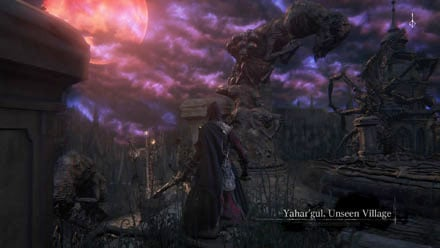
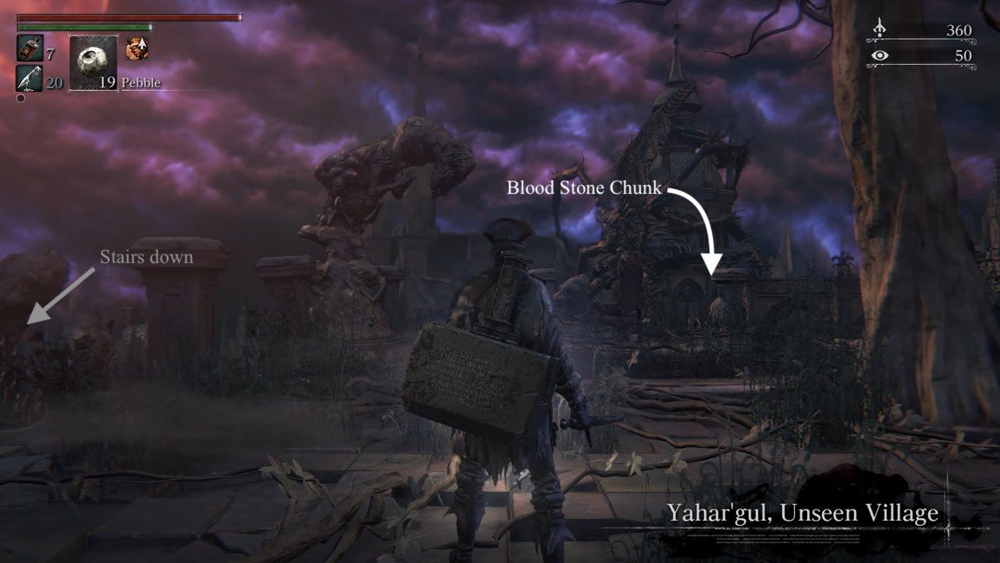
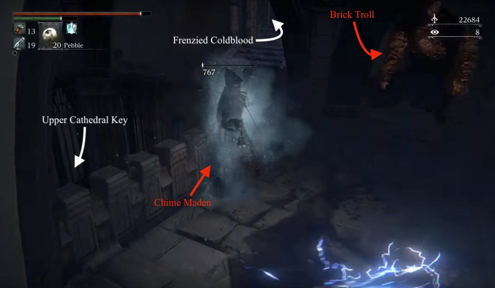
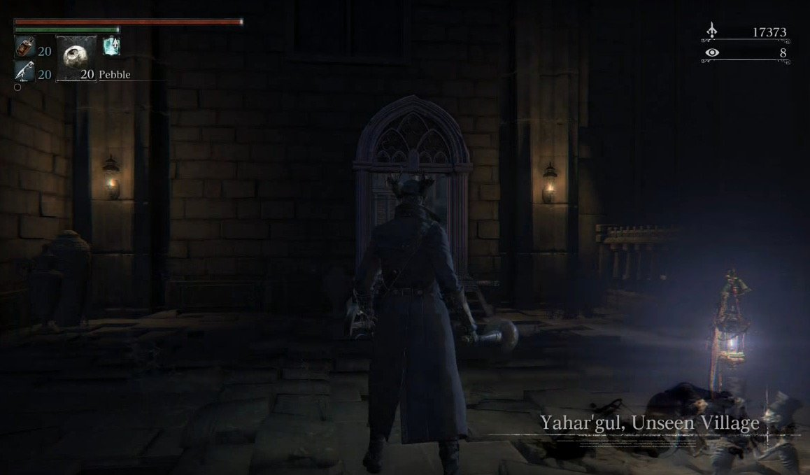
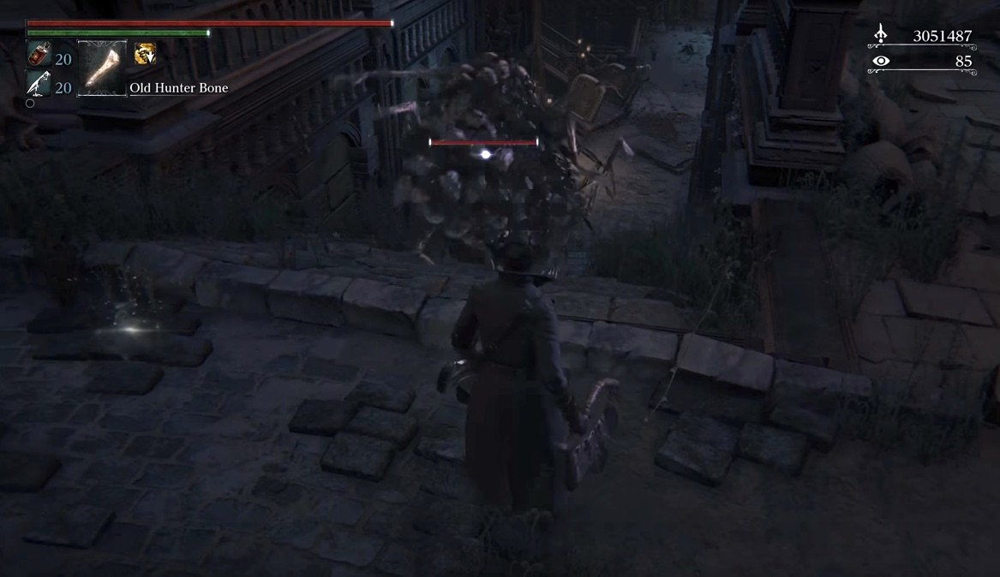
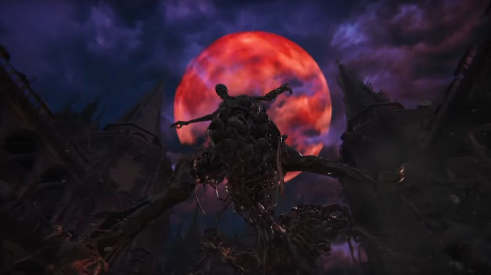

Yahar'gul is a location in Bloodborne. It is part of the main quest, following the defeat of Rom, the Vacuous Spider.
For pre-nightmare Yahar'gul (Snatcher kidnap), see Hypogean Gaol
General Information

- Previous: Byrgenwerth
- Next: Upper Cathedral Ward
- Suggested Level: 70 to 80
- Suggested Upgrade: +7 or +9
- Bosses: 1
- Lamps: 2
- Insight Gained:??
Yahar'gul, Unseen Village Maps
{kind=link}
{kind=link}
NPCs in the area
- None
Bosses
Items
Weapons
Consumables
Specials
Enemies
- Chime Maiden
- Hunter Mob
- Brick Troll
- Graveyard Hags
- Tainted Dog
- Wheelchair Mob
- Undead Amalgam
- Scourge Beast (Undead)
- Yahar'Gul Hunters
- Lesser Amygdala
Lore/Notes
- "Nightmarish rituals crave a newborn. Find one, and silence its harrowing cry."
Right in front of Hypogean Gaol lamp on the floor - "Madmen toil surreptitiously in rituals to beckon the moon. Uncover their secrets."
Location: Found on the right side outside of the cell you wake up in after being captured by a snatcher. - "Behold! A Paleblood sky!"
Outside Hypogean Gaol. Leave through the front door. This note is on top of the stairs leading to the area where the Yahar'gul set can be found. - "The Mensis ritual must be stopped, lest we all become beasts."
In a jail cell behind the first Chime Maiden you encounter after the Yahar'gul lantern
Yahar'gul, Unseen Village Walkthrough
Pre-Yahar'gul
Upon defeating Rom, the Vacuous Spider, the Hunter will be teleported to an area to the right of the Grand Cathedral, underneath the Lesser Amygdala that transports them to the Lecture Building if they are carrying the Tonsil Stone; the door located here that was previously locked, is now accessible, and beyond is the Yahar'gul, the Unseen Village.
The primary enemy in this area is actually the Chime Maidens, who will summon and buff most of your other opponents. Most of the enemies in Yahar'gul will constantly respawn because of them, so it is advisable to find and eliminate them before dealing with the mobs. When you kill a Chime Maiden, all of the enemies she has summoned will be staggered momentarily, giving you a window of free hits. Additionally, enemies summoned by Chime Maidens will be weakened once their Maiden has been slain.
Beyond the Door
Down a set of stairs you will emerge outside into the Unseen Village in a small plaza, a Chime Maiden will ring her bell and summon two Hunter Mob members in the plaza. Take care of them and head down the next set of stairs, where another Mob is waiting. After dealing with him, turn around at the foot of the stairs and you'll find a Frenzied Coldblood(8) in between the stairs and the wall. Head down the next set of stairs in order to reach the area's first Lamp.

From the Lamp there is a set of stairs on the left and a drop through a gap in the railing on the right, both leading down to a small area with staircases further down on either side. A Hunter Mob will spawn on the lower landing and proceed down the stairs on the left. Drop down through the railing to get behind them, and turn to your right to find a Bloodstone Chunk.
The stairs to the right will lead you down to a Hunter Mob, Wheelchair Mob, the Yahar'gul Helmet, a Lesser Amygdala, and a shortcut elevator that you can activate later.
The stairs on the left will lead down into a building with a Lesser Amygdala perched above the door. The Mob from earlier will linger on the stairs, and includes two riflemen. Approaching the Lesser Amygdala will cause it to attempt to grab you. Sprint past the Mob and into the building, the interior is dark so equip your Hunter's Torch or Hand Lantern before entering. Inside a rifleman and several of the Mob wait to ambush you. Sprint past them and up the stairs on the left side then turn right to find the first Chime Maiden; as mentioned earlier, kill her to reduce the threat of the Hunter Mob. Once you've cleared the building, open up the cage next to the Chime Maiden to find a Bolt Damp Blood Gem(4) and a Lore Note.
A door on the right side of the room leads outside to a set of stairs. Take these stairs down to find a shortcut door. To the left of the shortcut door is a hole in the wall that leads into a dark hallway. Enter the hallway and a Chime Maiden will summon a Brick Troll, Mob, Rifle Mob, Shield Mob, and Wheelchair Mob, in that order. Take care of the first two in the hallway as quickly as possible, the turn right around the corner and open the cage door. Sprint through the cage door hugging the right side and kill the Chime Maiden and Wheelchair Mob. Open the cage next to the Chime Maiden to find a Frenzied Coldblood(8), then open the shortcut door behind here, which will allow you to bypass the dark hallway. Backtrack out of the cage and turn right, taking care of any enemies that might've respawned, in order to find an Heir. Return to the cage and head back outside through the door on your left.
Out the door, turn right and there will be a staircase to your left. Go up the stairs and turn right. Go down another set of short stairs and turn right to fall through a gap in the railing, onto the ledge beneath it. Do this as quickly as possible, as the Chime Maiden in this area spawns a large number of Grave Hags. Once on the ledge, turn left and look around the corner for Frenzied Coldblood(8). Proceed through the doorway into another dark room, but watch out for the Brick Troll waiting inside to the right of the door. Rush the Chime Maiden before dealing with the Troll, and dropping down into the cage in the center of the room, where you'll find the Upper Cathedral Key. Open the gates to exit the cage and deal with a Brick Troll and a Wheelchair Gatling, then open the chest to find the Tiny Tonitrus.

A door leads back outside and across a small bridge. Taking the stairs up will lead you to a group of Grave Hags. Now that the Chime Maiden has been dealt with, feel free to take care of them as they won't respawn. Once you have, continue upwards and take the stairs on your right to return to the area you dropped down from. Draw these Hags towards you and try to deal with them in small groups, as proceeding too far forward will cause the Lesser Amygdala, perched on the building in front of you, to sweep the area with a bright blue beam that causes the ground to explode dealing massive damage. The beam will do damage to enemies as well, so if you're feeling brave you can bait the beam to help you take care of the Hags. Once they're dealt with, go between the two sets of stairs to find a Blood Stone Chunk.
The Second Lamp
Sprint down the stairs towards the Lesser Amygdala and avoid its energy beam attack. Don't worry about dodging the beam itself, but make sure to avoid any area it hits. Once you've made it into the building it's perched on, you'll be awarded with a new Lamp, Yahar'gul Chapel. Looking out over the railing, you'll be able to see an area you might remember: the Hypogean Gaol Lamp, which is broken and unusable now.
From the lamp, things get tricky. There is one door to the right of the lamp which takes you out to a courtyard. A Scurrying Beast spawns directly in front of the door on the left and drops 2x Blood Stone Chunk. As you walk out you'll notice another Lesser Amygdala on your right, but don't worry as this one won't attack you. You'll soon hear the sound of a Chime Maiden summoning enemies. Go right, heading past the tree to find a broken section in the railing. Drop down to kill the Rifle Hunter Mob and pick up Frenzied Coldblood(8). Drop down and finish off the two Rabid Dogs then head further down the stairs and the Chime Maiden will be on the immediately left. There also will be two Mobs and a Brick Troll. Take them on then drop down to an on one last Mob, and pick up the 8x Blood Vials, before heading into the building on the right. After opening the doors, you'll find yourself where the old Hypogean Gaol lamp was.

In the chapel, you'll notice that the two Snatchers are now gone. Instead, there is what appears to be a single person in the middle of the room. If you take him on you'll realize quite quickly that he's another hostile hunter, which is bad enough, but worse is that within a few seconds two more hostile hunters will come and join him. Here's what you can do:
- A safe way to begin the fight is to go down the spiral staircase to your left twice into a room with a beast and a cell with a closeable door. Once you defeat this beast you have this room free to lure the hunters into. Go back up one set of stairs where you'll see an unaware hunter on the other side of the staircase to attack from behind. Simply lure the hunters down and go into the cell where and close the door on with the hunters outside who can now be easily killed off with a weapon that reaches through walls.
- Another safe way is to aggro this hunter and lure all three to the chapel lamp; however, you must make sure that they are stuck outside of the wall. Once this is accomplished, use a thrust R2 such as Ludwig's Holy Blade to dispatch them through the wall. Beware that they may also hit you by this method as well. The Threaded Cane, Beast Claw, and Rifle Spear-wielding hunters drop Madman's Knowledge, a Clawmark Rune, and 20 Quicksilver Bullets respectively. If you win the fight, head out of the main door, if you don't want to fight you can head out of the door opposite the one you came in by the lamp, both take you back out to the area you'll have met the pigs at earlier on.
Instead of the Maneater Boars though, now you have to deal with an Undead Amalgam, an enemy that basically consists of a huge collection of bones and bodies. Think back to the bone towers from Tomb Of The Giants in Dark Souls, and you'll be in the right ball park, as such:
- These things are very strong and can combo you quickly.
- Get behind them and strike hard, using the Tonitrus or Bolt-infused weapons, as they're weak to bolt.
- If you have any difficulty with these enemies it's worth noting that they can be lured into the flaming skeletons in the yellow circles, which causes massive damage to them and slows their movements.

If you didn't pick up the Yahar'gul Set earlier in the game, follow the stairs down and retrieve it. Don't go through the big doors that you will notice are now open because as soon as you walk through them you'll be attacked by a rifleman and two more Undead Amalgams who spit poison at you from a distance. You will come back to this area soon.
Head back up the staircase that was on the left when you exited the chapel, and follow the small path around. You'll see a Rifle Hunter Mob waiting for you to kill him and follow the path around into a small room. Kill the Mob in here too and activate the shortcut; this will bring you back out near to where the main Yahar'gul lamp is. Trigger the lift again to head back down but before the lift reaches the bottom you'll notice that the tower has a break in the wall. About halfway down roll out of the lift and you'll land on a rooftop. Kill the two Rabid Dogs up here then walk into the room with a small bath in the centre. Examine it and you'll come out further into the level. Follow the door directly ahead of you and you'll find the Chime Maiden who summons all the high level enemies in the area. Kill her quickly as she'll summon a Mob to protect her. Once she is dead, feel free to backtrack and kill the Mobs from the other exit of the bath room. Afterwards, head down the ladders and come out into the street. You have a choice here, you can clear out the area and pick up any items that are laying about, or you can sprint down the hill to the arch way.
Either way, the archway at the bottom of the hill is your goal as you'll find the boss of Yahar'gul.

BOSS FIGHT: One Reborn
Yahar'gul, Unseen Village Maps
 Anonymous
AnonymousMicolash wondering why I'm walking towards a random fence and charging R2's with a saw cleaver
- Anonymous
I will forever remember this area with one Dunkey quote: "STOP SHOOTING THE ****ING LASERS"
- Anonymous
The gank squad can be pretty un fair, but what i dont like in bloodborne is the general dmg output of most of the hostile hunters, it would be much funnier if their difficulty was based on different strategies a hostile hunter can use instead of mere exagerate dmg output .
- Anonymous
This area makes me want to **** bricks, I ****ing hate this part. The **** wipe gank squad has killed me more than any other aspect of the game. It really ****ing figures this area is wrapped up by a stupid easy puking zombie baby. **** this area.
- Anonymous
I noticed that a lot of the mirrors are facing walls or areas that are pretty obstructed in that house before the final chime maiden and boss area. Is there any lore to this?
Because soon afterwards we meet Micolash who uses similar mirrors to teleport around his arena, it feels like theres some significance there
- Anonymous
I was playing through Unseen Village the other day and I realized that I hate the Graveyard Hags on this level more than any other enemy in the game.
- Anonymous
This is the first part of the game that falls flat for me, personally. If the best strategy for an area is to *not* actually engage in the gameplay but instead just sprint past everything to an enemy the game hasn't even told you exists, much less where it is, it's bad design and very unsatisfying to play.
- Anonymous
I love all the Snatchers lying dead all around the place probably killed by the vengeful abominations they helped create kidnaping the people that form them.
- Anonymous
I notice many having problems with the 3 Yarhagul Hunters/Kidnappers
All you have to do is use Blue Elixir, slowly sneak down the left side of the stair case and up behind the first hunter chilling on the stairs, backstab/parry him and as soon as he gets up pure him down lower on the stairs and hit him with Augur of Ebrietas and combo, repeat until dead and you should have him down without the other 2 aggroed.
Now slowly sneak up and assassinate the beast rune/claws using hunter with the same technique.
All you have to do is circle around the final hunter or just take him on head on with augur/pistol parries without fear of being ganked.
You’re welcome, this strategy is especially necessary it NG++ and on.
- Anonymous
- Anonymous
Also a note, if you don't have a very long reach weapon like a cane, do not lure the 3 hunters downstairs and lock yourself in the cell. One of the hunters posses threaded cane and the damage output of the whip is INSANE. You might trap yourself in there and when you are trying to reach for attack, the whip guy can whip your ass very easily. I had hard time with Ludwig's great sword mode, don't even try with a weapon like blade of mercy etc.
- Anonymous
This is bull****. The chime maidens aren't in my game. At all. I spent two hours killing enemies only to come here and find out that they're being summoned. And in my game, by an invisible *****. Jesus.
- Anonymous
"Yarnham's Best Beast Shampoo for a glossy fur... hair care by Yahar Guhl."
- Anonymous
the guy who wrote this must be dyslexic in direction, because half of this is just wrong and misguiding
- Anonymous
Maledictus
Donum libas
Infici mur
Maledictus bestia
Maledictus
Pater do si donas
Infici mur
Argentum aquae in tenebris
Mater's sanguine
Redemptionis risa se
Exiet exiet, flebatur a salis
Vale, vale
Infici mur
In tenebris aquae
Maledictus
Et argentum aquae
Infici mur
Et argentum aquae
Sanguine!
Sanguine!
Cursed
You pour out your gift
We're infected / tained
Cursed by the beast
Cursed
Father I surrender, if you grant it
We're infected
Silver in the shadow of water
The mother's blood
Redemption, having been laughed at
Rouses itself rouses itself. It's lamented by the water
Farewell, farewell
We're infected
In the shadow of the water
Cursed
And the silver waters
We're infected
And the silver of the water
Blood!
Blood!
- Anonymous
How do you say yahar’gul? I’ve heard it pronounced yar-gul or ya-har-gul or yar-ghoul or ya-har-ghoul
- Anonymous
I discovered this place by one of those kidnappers when I was on my way to fight vicar Amelia did this happen to anyone else I'm only a level 39
- Anonymous
What's really cool is how the chanting is completely gone after you unlock the whole level, and you see the streets are filled with corpses, so they must've killed the entire village creating the coffins/ one reborn
- Anonymous
***** this place, ***** the amygdala's rays, ***** the maiden mechanic, ***** the ganking squad and ***** those *****ing skyhigh enemy damage output and the fact they never drop*****, it's just too *****ing frustrating. just lazy ds2 artificial mechanic bull*****one of the worst parts of the entire game
- Anonymous
You didn't mention how if you die to a warlock type guy outside of Cathedral Ward, you will be teleported here as well.
- Anonymous
- Anonymous
There is a child with the Cage of Mensis on his head right next to the Hypogean Gaol lamp
- Anonymous
What are points A and B? we're struggling to get out from here :(
- Anonymous
What's up with the damaging, glowing pools with the body when you get on the street? What are they?
- Anonymous
Strange theres no mention anywhere of all the voices and whispers and prayers and junk the closer you get to The One Reborn. I think its... oddly relaxing to hear
- Anonymous
- Anonymous
At the second lamp, you can hear the cries of a newborn baby. Who is this meant to be?
- Anonymous
that place where you find the body of the MAJESTIC , remind me of my class at school
- Anonymous
hey, you forgot the BLOOD STONE CHUNK (or 2) where Adella used to be, all the way down after the 3 npc Hunters by the broken Gaol lamp.
- Anonymous
Is it normal that the door to the left of the gate, which opens with the blood moon, is closed? I mean the one in the opposite direction of the yahar'gul set. In the map it says that there is frenzied coldblood, but I still don't understand how to get in there
- Anonymous
Seriously no-one noticed that this location is heavily based on Zdzislaw Beksinski's art?
- Anonymous
The name “Unseen Village” could be based on the “Invisible College” of the Rosicrucian Order. The Rosicrucians are a secret society founded in Christianity that pride themselves in their esoteric enlightenment, but refrain from revealing their “truth” until the intellectual climate is ripe to receive it. The School of Mensis can be likened to the Order as it was formed as a sect of the Healing Church, but evidently branched off to persue taboo alchemy.
- Anonymous
Someone should add that you can get 2 blood stone chunks x2 in the first 2 floors below the broken hypogean gaol lamp when you revisit Yahar'gul. One is in front of where you found Adella praying and the other is in front of the hole that leads to the Darkbeast Paarl arena.
- Anonymous
When I killed Rom, I seriously spent like an hour wondering what happened to the hypogean gaol bonfire.
- Anonymous
When taking the elevator that leads to the core maiden boosting the high level mobs, I can interact with a bloody bowl that seems to take me to kinda other phase... Can anyone give some info about this please?
- Anonymous
Here's a tip for anyone having a difficult time with Snatchers. They are easy to parry, get their attention and bait out an attack, the ond you want is when they raise their RIGHT ARM, once they stop pulling it up, wait a split second and shoot then go get that Visceral, this in my opinion is the best way to deal with them aside from a backstab, once their health goes down to about 3/4ths they'll engulf themselves in red mist and will be faster and more aggressive as well as hit harder, while they charge up this buffed state they are vulnerable so if they do it take advantage and get some damage in.
Also in hunting the chime maidens you may find Brick Trolls difficult, they are just as easy to bait out a parry as Snatchers if not more so, there are 2 just outside and to the left of the Central Yahrnam/Yharnam Lamp after you've unlocked that shortcut, this is an excellent place to practice. Good Luck fellow Hunters.
- Anonymous
- Anonymous
I am stuck. After I defeated Rom, I was captured by the amygdala when I landed and went and finished the frontier. Now, since I never lit the lamp for the unseen village, it does not appear on any of the headstones in the hunters dream, I cannot figure out how to get there? I tried returning to the moonlight lake, but the lady is gone. I also tried getting captured by the amygdala outside of cathedral ward, but ended up in the hunters nightmare. Anyone know how I can get back to that special room in cathedral ward and on to the unseen village?
- Anonymous
I missed lighting the lamp to the unseen village after I killed rom and was transported (got caught before the door). How do I get back there?
- Anonymous
Okay but there's not even a mention to where the hell you spawn when snatched I keep getting killed by dogs that aren't mentionner here and nothing here is being helpful. Worst fextralife page ever.
- Anonymous
This map is useless. It's missing bell chime maidens and the layout doesn't really match up well.
- Anonymous
that moment when you kill one reborn after you get kidnaped
- Anonymous
- Anonymous
Please don't light me on fire for being a noob, but i had just went back to the cathedral lamp and saw one of those huge guys with the sacs outside next to the abandoned caravan hiding in the dark, i approached him and had him down to 1 hit before he killed me and i woke up here but in a cell... I had no idea what was happening and i found this cleric chick down in the basement, some messages on the ground said to treat her with care to make the healing church work. I've been trying to get through this area and i honestly feel like i'm under leveled or something... Those big sac-carrying guys two hit me when they're buffed with that red mist. I unlocked the lamp at the top of the stairs in front of the caryll rune, that was actually my first caryll rune. Still don't know how to use caryll runes either... I went to them, but if i click "use" nothing happens... i'm assuming i don't have enough arcane or something? IDK, it seems like every time i die i end up somewhere new. The first time i died i ended up in the hunter's dream and had no idea what was going on because i had made it past the dog demon thing in the hospital and then made it to the torch guy right next to the ladder leading up to the lamp and died. I assumed i'd end up back at the hospital room and realized i had to use the tombstone to get back to yharnam. I started over because i hate dying first thing in the game, so the second time i died was to the big sac carrying guy next to the cathedral lamp and when i died THIS time i ended up in some area i'd never been to (yahr'gul) in a situation i had no grasp of (randomly in a cell after dying with the cleric chick asking me to leave her alone when i didn't particularly know what to do with her anyways...) in a cluster ***** of those big sac-carrying guys who could two hit me... I was like "oh, there's the difficulty curve.", same thoughts when i ran into the cleric beast... everything else was easy and then i accidentally run into the cleric beast's boss area thinking its just another part of the road leading somewhere else and i swear to god i thought multiple times "I don't think i can beat this, i might have ran into a mid game boss at the beginning of the game...", I managed to beat him on my first try, but not with lack of me running like a ***** and using all 20 of my blood vials... Eventually i realized that i could just two hand my hunter's axe and just spam r1 in front of him and he'd stagger. I had been trying to maintain distance the entire time and it was THE wrong thing to do... The gun was useless and while i did damage, it felt like the cleric beast had SUCH a huge hp pool... and then i killed the next boss, the hunter guy in front of Oedon, without ANY problems. All i did was r1 interrupt him while he was human and then circle around him counter-clockwise while he was a beast and attacked his back, you know, the tried and true dark souls counter-all. I thought it'd be easier since i've played all three dark souls (completed 2 and 3, got to RIGHT before ornstein and smough in 1), but i was pleased to find that while it is LIKE dark souls, it is definitely it's own game. The difficulty was definitely there. So far its been a blast and i'm really looking forward to more gameplay, i still don't know how gun damage works. I got one of those bone marrow items, but i don't know how to use it. I also got a chalice from the blood-starved beast which was a breeze with the fire paper i got from albert and summoning some help. I summoned a player and albert to kill it. It's really hard trying to decide what to spend insight on at the water basin thing in the hunter's dream, i ended up buying the boss armor of that hunter guy i killed and it wasn't even as good as the Yharnam hunter set i'd bought from the the other water basin next to where the doll is before she starts moving around... Also, he told me i could "use the doll too, if it please you"... -coughs- Maybe he meant her leveling feature? But i talked to him before she was even up and moving around so at the time that he told me this i was just like "...?!". I'm iffy about having to spend insight to summon people, but you find enough madman's knowledge items that it's like "meh". I think i'm going to start over again because i died at least twenty times in yahar'gul trying to muscle past the big sac-carrying guys... i had only died TWICE besides the (at least) twenty times i died here... I'm definitely under leveled or something. I've been using the Kirkhammer, it's so awesome, this paired with a gun gives me three weapons in two slots. The Kirkhammer gives me a quick weapon AND a slow heavy hitter hammer in one. I feel like my dark souls experience lead me to this weapon... The sword has the straight sword r1, r1, r2 combo from ds3 and greathammers aren't anything new in dark souls. I love how you basically have the quick step arte on daggers in ds3 as your regular dodge in bloodborne (i know this came first, i'm just speaking from my perspective as i played ds3 first), at least when locked on.
- Anonymous
I just beat the Boss in the Hypogeon Gaol and I want to find the upper cath keys. I must be in the wrong place, because I do not see what the guide says. No gap in any fences. I am back in Old Town area. As much time as was put into all of this, there are still holes that are not clear how to follow.
- Anonymous
Who is that woman crying to the right of the jail cell once you take a right and head the some stairs and you find her crying?
- Anonymous
I ended up here after I got killed by the enemy in the cathedral ward, how can I get back to an area more suitable for my level?
- Anonymous
No trivia mentioning that a lot of the level design & terrain assets are a direct copy of another area of the game? Heck, you see messages that are relevant to the other area while in Yahar'gul (which is annoying and disappointing as it makes the messages mostly useless/annoying).
- Anonymous
As you progress through the game is the game going to stop giving you the 20 blood vials each time you warp in and out of an area? My game just started this tonight and I'm not sure how I'm suppose to finish the game this way. Seems like a glitch. Btw I'm in blood moon yahargul area and have finished off the three hunters thus far.
- Anonymous
As you progress through the game is the game going to stop giving you the 20 blood vials each time you warp in and out of an area? My game just started this tonight and I'm not sure how I'm suppose to finish the game this way. Seems like a glitch. Btw I'm in blood moon yahargul area and have finished off the three hunters thus far.
- Anonymous
I like my way of cheesing the 3 hunters the best. No one mentions it anywhere I've seen, but you can visceral the guy on the staircase, then run as if you going to Paarl. Go about halfway through the cave, and they lose interest, along with the mutant werewolf. At this point, you can kill the werewolf, because the hunters have forgotten about you, and can't hear you. Repeat, until you kill the guy on the stairs, then do it for the naked guy with the beast claw, although if you run back to the lantern after the first visceral on the naked guy, as it seemed to only aggro the naked guy. Rinse, and repeat until the second guy is dead, as he will also lose interest if you make enough distance. Third guy can be fought in an easy one on one fight at that point. I couldn't find a way of getting behind the final guy for a visceral, so I guess no cheese for him, but you shouldn't need it.
- Anonymous
The difficulty spike is real.
This area almost made me ragequit and made me not feel happiness anymore.
Be warned...after defeating Rom. You're in for being in the *****ing Devils playground.
- Anonymous
I got here once after killing Rom. But havent been able to get back. No lantern on the headstones in the hunters dream. Is there a physical way there?
- Anonymous
Help me i am in early game and this big dude with a big sack beat me and kidnapped me then i woke up in a prison in this area. How, why and am i meant to be here?
- Anonymous
you can defeat darkbeast paarl with the help of an old hunter you can summon near the stairs just before the fight. Beast blood pellets were also useful. I defeated him in my first try :D
- Anonymous
- Anonymous
Does somebody know what the burning bodies in the main street do?
- Anonymous
Does a bell maiden spawn that summons invaders spawn here in co op?
- Anonymous
No where else in the game have I been stuck on the regular mobs
- Anonymous
I never lit the lamp before leaving the unseen village... Can I still return or am I screwed and have to restart the entire game?
To Hypogean Gaol. Also, need a way to message you if need be
- Anonymous
Stand next to the Yahar'gul Chapel lamp long enough, and you'll a baby cry. Freaked me out when I heard it, cause I thought it was my kid. Very subtle
Yo man, trying to help the wiki out some. Mind helping me list item drops and what not for this area? All help and collaboration would be apreciated
Personally, I think there should be two pages. The pertinent information is totally different: the means to get there, the enemy layout, the NPC, and the boss. The wiki should have two pages containing the relevant info for where the person is, as described by the Lamp.
- Anonymous
- Anonymous
According to the description of the Black Hooded Iron Helm, the village was founded by the School of Mensis.
- Anonymous
- Anonymous
I was killed by one of those tall looking enemies seen around the hidden village and it took me to what looks like a prison, I have no idea where to go or why it even took me here in the first place, please help
- Anonymous
My door under the amygdala is still closed for some reason and i have the tonsil stone wth my friend was able to go through?
- Anonymous
After I beaten Rom, cut scene, it wouldn't take me to the next part in the game. I was just walking around. And it wouldn't allow my to wrap to hunters dream. The maiden stayed there. I quit the game came back and nothing I did everything that I could have done before this point in the game. I don't know if this is a glitch or what.
Does the lamp previously available in Hypogean Gaol becomes available again once the hunters are dead?
- Anonymous
If you are in the gaol try to open the shortcut so you dont have to kill the three hunters Excuse me if its in the text
- Anonymous
I can't activate the elevator shortcut. Elevator just won't go up... Please From, fix those elevator issues.... Can't progress at the celestial boss on my other build, too!!!
- Anonymous
- Anonymous
I actually died to something from the first chalice dungeon that was outside the cathedral ward. Instead of respawningoing in the hunters dream . I spawned here. What happened?
- Anonymous
I'm not sure if this was discussed, but I found a slick shortcut to The One Reborn via the elevator. Whenever you unlock the shortcut elevator and take it back up to the top area with the wheelchair shotgun and the sword guy (sorry -- terrible descriptions), when you take it back down, face the opposite way of the elevator entrance and you will see a quick opening sort of flash by. There is a hole in the gate surronding the elevator, so if you time it right, you can roll out on the way down (which is far easier). You'll end up on a rooftop and you'll have to take car of two dogs. After that, you'll walk to a room with a pink bath. This will warp you to an area with a normal sword dude and a chime maiden. after you kill them, you'll see a ladder, which, when taken down, will basically set you up right in front of the boss fight for The One Reborn
- Anonymous
Um, something happened, I killed the spider (hate spiders) was teleported, then the door was open was grabbed by the big thing on the wall, transported killed the boss, came back but now the door is closed and i cant open it....
- Anonymous
cant enter grand cathedral or hypogean gaol to get to unseen village any tips? I can progress to nightmare frontier though.
- Anonymous
When I try to travel to the Hypogean Gaol lamp it says "Function unavailable.". I beat Rom and I need to beat The One Reborn to get to the Nightmare of Mensis, and as you may know, you need to go there to beat the game. (Micolash and Mergo's Wet Nurse). Could someone please explain how to get to the Unseen Village or where to go from here?
- Anonymous
I noticed some heavy fps drops in the exterior areas of yahar'gul, and inside of the chapel (basicly everywhere in the area). Are those normal? I didn't have them before the bloodmoon. Anyone else noticing them?
- Anonymous
I defeated Rom and was teleported to the circular thing near Amygdala but the door that should be open isn't. If it makes any difference, I was stupid enough to do the haunted woods skip near the beginning of the game. Any ideas?
- Anonymous
Might be important to note that you can only get blood echoes for killing an enemy once. After they're revived by the chime, they don't give you anything until you actually leave the area or die.
- Anonymous
I have exactly the same problem, the door wont open for me no matter what i do.... I also defeated Rom the spider and i have the stone in my possesion but it wont open for me, i even killed the boss in the Grand Cathedral but still nothing.. The door stays closed no matter what, the death dealers also wont warp me to Yahar gul when they kill me.. So im totally stuck and i can't progress bloodborne.. really annoying...
- Anonymous
I beat Rom and went Yahar'gul but I turned back another place. And Hypogen Gaol lamp is blocked (there are some hunters). So, how can i get Yahar'gul again. I must kill One Reborn for get proggess.
- Anonymous
On the elevator shortcut, if you jump onto a roof about half way through, you can inspect a red bath that will teleport you to a room where you can easily kill one of the chime maidens.
- Anonymous
Equip LHB and lure hunters all the way to the Chapel lamp so that they are stuck outside the wall and spam R2 charged through the wall for an easy kill.
- Anonymous
I like this part of the game because I feel like it was supposed to be more frantic, with a focus on evading enemies and unlocking shortcuts, rather than fighting. This serves to highlight how powerless you actually are in the face of the Horrors that you ecounter.
- Anonymous
I had the tonsil stone and was tranported to the lecture building and later the nightmare frontier and beat amygdala. But i dont know how to get back to the area after the cutscene... any help?
- Anonymous
- Anonymous
- Anonymous
amygdala grabbed me and sent me to the other world, how do i go back to the place where he grabbed me. I can't go to the third toomstone due to this
- Anonymous
When repeately trying to take on the Three Hunters in the old chapel head on kept failing I figured out an easy way to take care of the one that hides in the stairwell, which can somewhat even the odds. Basically after sneaking up on the stairwell guy and doing a charged R2 attack followed by viceral hit to his back started to run back up to the last lamp so If I died my blood echos would be right next to the lamp. The hunter in the stairwell would try to run after me, but I figured out that if he never saw me the other two hunters wouldn't aggro onto me. So if I had a big enough head start he after my viceral he would give chase but lose interest about halfway to the lamp and I could just wait up by the lamp until he went back into the stairwell so I could go down and sneak up on him again. I'm not proud of this tactic, but it worked.
- Anonymous
On one of the gem pages it said a phys attack UP % gem is found in here past the three hunters down some stairs behind a werewolf. I came here to see more specific instructions but apparently no gem drops at all on this page?
- Anonymous
What IF i have only that lamp there where are the three Hunters and becouse there are three Hunters i cant usein that lamp so how i can go there (i have killed rom)
- Anonymous
It says Tempering Bolt Damp Blood Gem but it's actually just Tempering Damp Blood Gem which gives phy +18%
- Anonymous
A Cathedral Nun is praying, scared out of her mind, downstairs from the floor where you spawn for the first time when you arrive. She won't talk to you casually, but if you're wearing the Black Church Attire set, she will give you a Mad Man's Knowledge.
As someone mentioned in an unrelated discussion, the glowing bonfires in this area are very strange. An early theory I had was that jumping down from the towers above might do something, similar to accessing the Rom fight, but that didn't pan out.
I found that if you get hit by the fires 3 times, they go out. I tried putting out all 4 with no clear result. I even tried allowing the Amygdala early in the area to grab me after I put them out (masochism?) to no avail. The boss fight seemed easier than I remember, but I did have the old Hunter summoned. Anyone know if these have some other purpose besides just being an environmental hazard?
- Anonymous
Thus post doesn't mention the baths shortcut you can take from the shortcut elevator. Get on top of the elevator as its going down and furthur down, walk off onto a roof and there will be a bath you can inspect to be teleported to anothe bath right next the the One Reborn.
So funny thing I was on my way to kill vicar amelia when killing the two giants a snatcher killed me from behind and I ended up in the prison
4
+10
-1